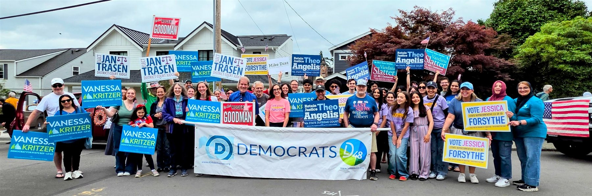
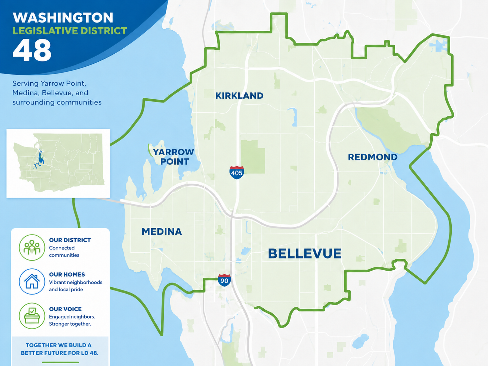

48th Legislative District · King County
Build Democratic power on the Eastside.
We are neighbors in Bellevue, Kirkland, Redmond, and the Points Communities of Medina, Hunts Point, Yarrow Point, and Clyde Hill organizing to elect Democrats, endorse strong local candidates, and win on the issues that shape our community.

Come to a meeting
Sit in the back, no commitment. Here is exactly what happens and when.
See the schedule → Ready to helpGet involved
{{ middleDoorBody }}
{{ middleDoorCta }} Ready to leadBecome a PCO
Be the Democratic Party on your block. Several precincts here are still vacant.
See open precincts →What we do
A legislative district organization is local democracy at work.
Washington Democrats are organized by legislative district. As the team for the 48th, we meet every month, build the local party, and do the hands-on work of winning elections close to home.
{{ a.title }}
{{ a.body }}
Find your district
Are you in the 48th?
Our district covers much of Bellevue, Kirkland, and Redmond, along with the Points Communities of Medina, Hunts Point, Yarrow Point, and Clyde Hill. Look up your address to confirm you are in LD 48, and to find the precinct and congressional district you will need when you join.
Find your district →
Upcoming events
All events →-
{{ e.mon }}{{ e.day }}
{{ e.title }}
{{ e.meta }}
Endorsements
Full list →Our members vote to endorse candidates and ballot measures up and down the ticket. These endorsements also help shape King County Democrats endorsements.
Stay in the loop
Get meeting reminders, endorsement news, and ways to help, straight to your inbox.
Get texts that matter
Event invites, voting reminders, and timely calls to action. You can opt out any time by replying STOP.
Opt in to texts